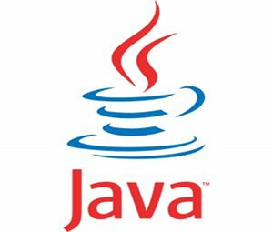
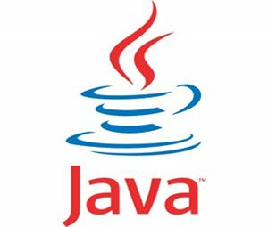

Soy estudiante de programación. Actualmente me encuentro estudiando lenguaje C#, .NET Framework y SQL. Soy una persona en constante aprendizaje y con mucho entusiasmo en seguir perfeccionando mi perfil profesional.
Mi base universitaria es Ceremonial y Protocolo en La Universidad Nacional de la Matanza. Luego, me formé como puericultora y consultora de porteo donde trabajo actualmente desde el 2017. Soy tutora y parte del equipo docente de la escuela Crianza en Brazos.
Soy estudiante autodidacta de programación desde julio 2021. He realizado algunos cursos como Fundamentos de programación en el plan de estudio de Argentina Programa. En noviembre de 2021 comencé a estudiar para el perfil Full Stack Developer también en el plan de estudio de Argentina Programa, finalizado en julio 2022.
Luego, comencé a estudiar los fundamentos de programación de la mano de C# con Maximiliano Sar Fernandez (Maxi programa) finalizado en julio 2022. En septiembre 2022 finalicé el curso Nivel 2 con programación orientada a objetos, lenguaje C# y .NET Framework desarrollando app WinForms con conexión a base de datos SQL. Actualmente, me encuentro cursando el Nivel 3 de C#, esta vez en el área de desarrollo WEB con ASP.NET y conexión a base de datos SQL.
Estas son algunas de las tecnologías de las que tengo conocimientos.
 



Acceso a repositorio GitHub. Desarrollo de app WinForms con conexión a base de datos. POO + NET + SQL.
Portfolio desarrollado en Angular con conexión a base de datos. MySQL + Spring boot + Netbeans + Java + Postman.
Mi perfil de Github completo con sus respectivos repositorios que mantendré actualizado con nuevos proyectos.

Proyectos en formato carrousel subido a github pages que ire manteniendo actualizado. Utilizando HTML, CSS y Bootstrap.